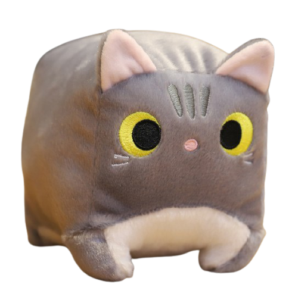
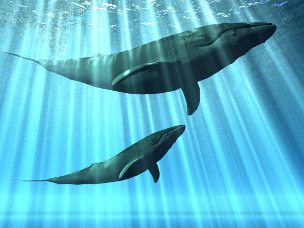
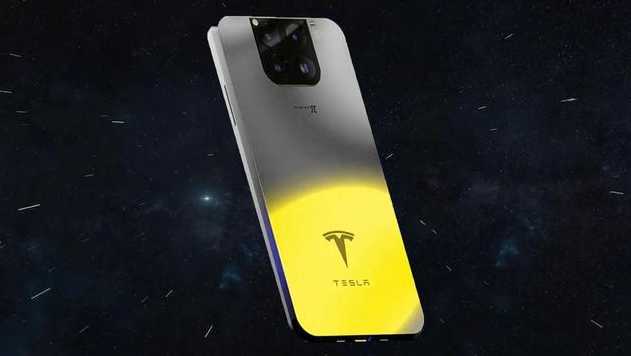

Последние новости
Плюшевые коты
Плюшевая кошка — это не какая-то конкретная порода, это лишь характеристика качества шерсти. Коты с плюшевой шерстью встречаются сразу в нескольких породах.Подробенее

Вымирание китов
Кит — самое большое из живущих на Земле животных. Наиболее крупные особи достигают 34 м в длину, весят до 190 т и способны поглотить за день 8 т пищи. В животном мире у кита почти нет естественных врагов. Кроме одного — человека. Китобойный промысел, морская нефтедобыча, браконьерство, рыболовные сети, загрязнение океанов — все это поставило морских гигантов на грань исчезновения. Борьба за спасение этих млекопитающих — одно из приоритетных направлений в деятельности различных фондов защиты природы.
Подробнее
Какие китообразные вымирают?Южный кит
Живут группами по две-три особи. Несмотря на игривый и любознательный характер, южный кит весьма медлителен. Даже напуганный, не может развить скорость свыше 14 км/ч, поэтому всегда был легкой добычей китобоев. Длина тела достигает 21 м, вес 80 т.
Синий кит
Самый крупный из китообразных. Средняя длина взрослого кита 30 м, вес 120 т. Только язык весит 3 т, печень 1 т, сердце 700 кг. В первой половине XX столетия был почти полностью уничтожен.Источник
